Introduction
Hereafter we updated the sprint backlog with the undone tasks from sprint1 and sprint2 and old tasks have been switched to "must have" as we want to deliver a full deployable service for client use cases
| Must Have |
Should Have |
Could Have |
The client must successfully submit a parking request (F1)
The service must accept a request if the INDOOR area is free (F2)
The robot must accept a client request if it is available (F2-NF5)
The token is supposed to be unique and unforgeable (NF1)
The SpringViewIndoor is supposed to show a prompt for the client to interact with to notify to the system that the car has been placed in the INDOOR area (F4)
The SpringViewIndoor is supposed to show a prompt for the client to interact with for his parking request (F1)
The SpringViewOutdoor is supposed to show a prompt to the client for him to submit the token (F7)
|
|
|
This sprint could leverage and reuse some components created in the previous sprint so
two days should be enough.
Project
Starting from the
logic architecture derived during the analysis phase and considering the results of
Sprint2 let's now update
the components we require for this sprint: SpringController/View, ClientService. Furthermore, we want to specify that all what we developed in Sprint2 stand also for this sprint and only changes and updates to it are hereby presented.
SpringIndoorView
Client home page
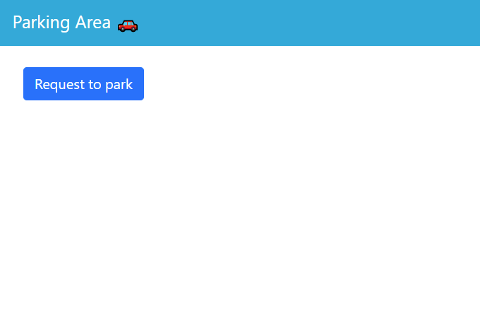
|
Client home page error: no parking slot available
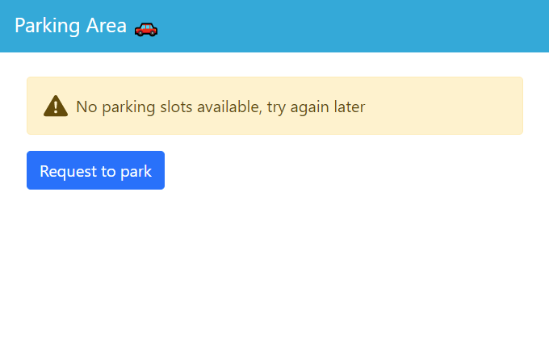
|
Client home page error: trolley stopped
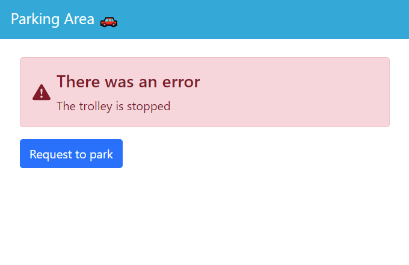
|
Client home page error: indoor area engaged
|
Good reqenter: SLOTNUM notification and carenter view
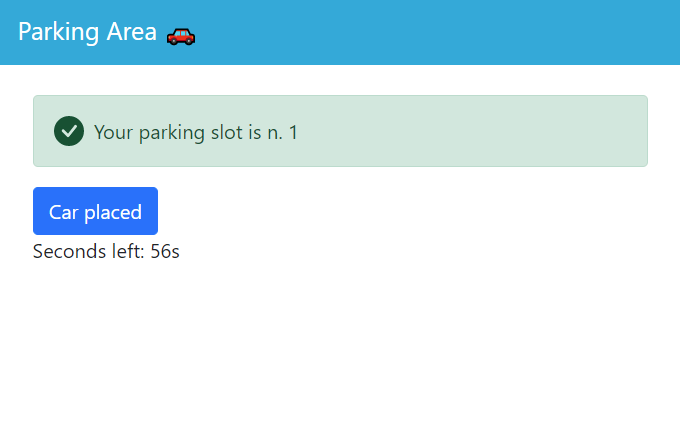
|
Client carenter error: car not parked on indoor
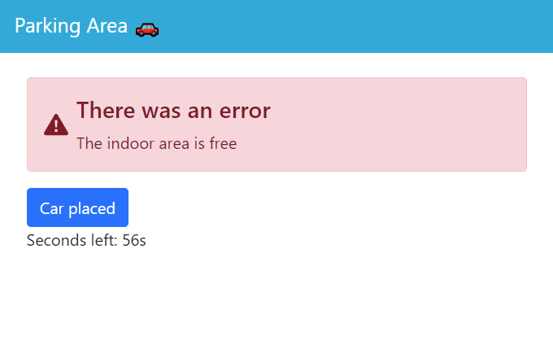
|
SpringOutdoorView
Client home page
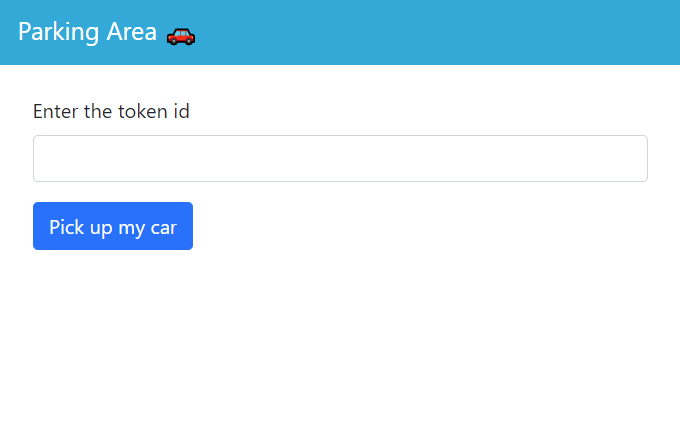
|
Client home page error: trolley stopped
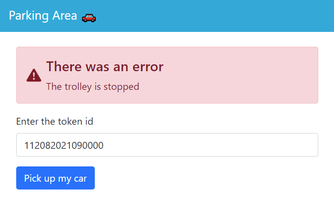
|
Client home page error: outdoor area engaged
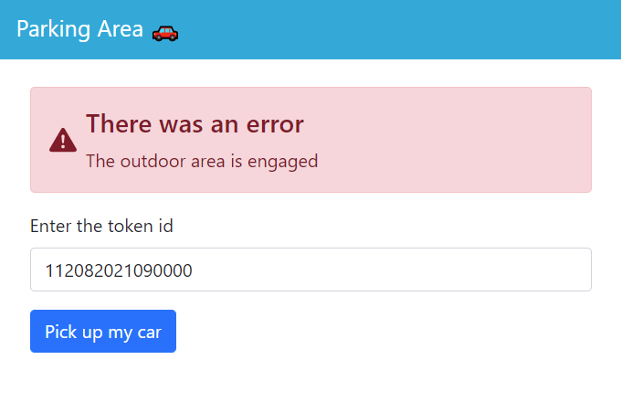
|
Client home page error: invalid tokenid
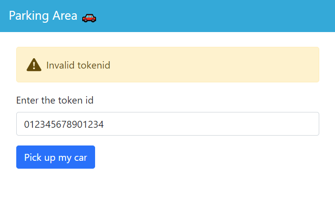
|
Client correct tokenid
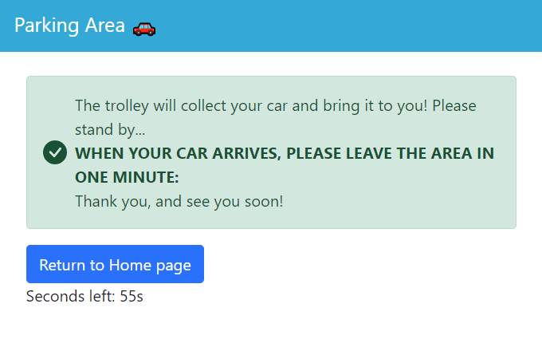
|
SpringController
Using RESTful APIs for the M2M interaction (cont.d) and JS for H2M interaction
As already known, the M2M interaction has been developed using RESTful APIs (API docs).
These are managed by the already known SpringController; the H2M interaction, however, is orchestrated by
a client-side app.js file and a BaseController: the BaseController
accepts /client or /clientOut request to return to the home pages while the app.js changes the DOM elements of the page according to the responses of the SpringController (e.g. changes
buttons to let the client perform different actions).
To implement some sort of "session timeout" (1 min), we exploited JS ability to fire up alarms when a certain time is reached: this alarms will trigger the return to the homepage as a countermeasure for the client leaving or DoS attacks to the service:
var timeout
var timeoutValue = 60
var seconds
...
function reqenter() {
seconds = timeoutValue
...
timeout = setInterval(function() {
seconds--
document.getElementById("countdown").innerHTML = seconds + "s ";
if (seconds == 0) {
clearInterval(x);
window.location = '/client'
}
}, 1000);
}
We exploited the Spring Framework once again to simplify our code by using the @Controller and @RestController to diversify these two controllers:
- The @RestController annotation was used for the SpringController as it is a combination of the @Controller and @ResponseBody annotations:
the @Controller annotation specializes the annotated component to be a MVC controller, while the @ResponseBody one lets you include objects in the HTTPResponse an automatically encodes them
in json format, which is what we needed to implement our REST-APIs
- The @Controller annotation has been used for the BaseController as we didn't need to send objects in its responses, rather html pages, so the @ResponseBody annotation was not required.
We also annotated the controllers' methods with @GetMapping, to automatically fire specific methods for specific requests. An example is provided by the code below:
|
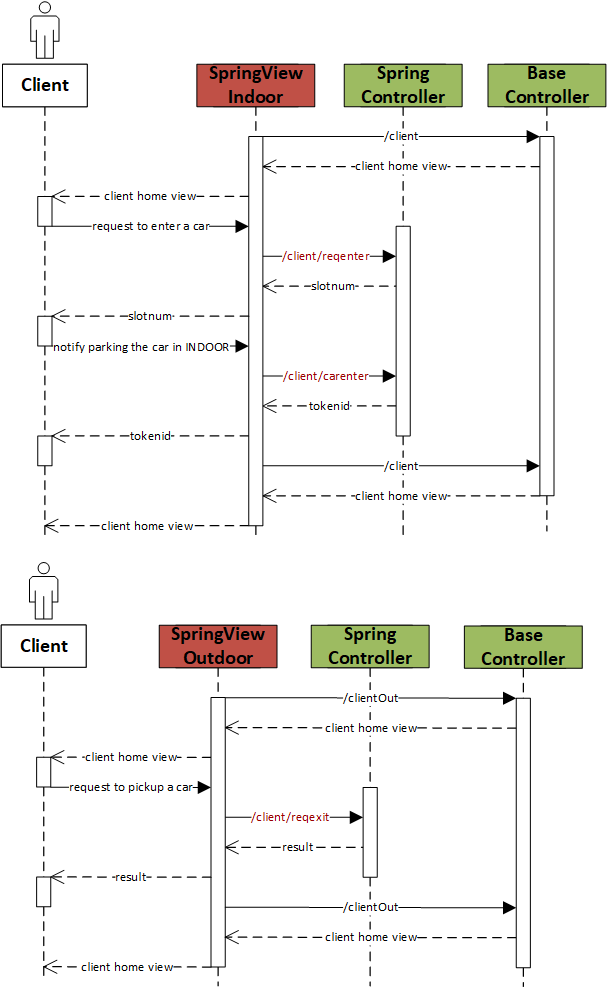
|
@Controller
class BaseController {
...
@GetMapping("/client")
fun clientInHomepage(): String {
return "clientInHomepage"
}
...
}
@RestController
class SpringController {
...
@GetMapping("/client/reqenter")
fun reqenter(): ResponseEntity<ParkingSlot> {
var request = MsgUtil.buildRequest("springcontroller", "reqenter", "reqenter(X)", "clientservice")
val reply = ApplMessageUtil.messageFromString(connParkClientService.request(request))
val message: Message = Json.decodeFromString(reply.msgContent)
//Error
if (message.code != 0)
throw ApiErrorException(HttpStatus.FORBIDDEN, ApiError(message.code, message.message))
return ResponseEntity.ok(ParkingSlot(message.message.toInt()))
}
...
}
ClientService
The ClientService as a Moore's Finite State Machine (cont.d)
The ClientService has been completed by adding the last checks to perform before accepting a reqenter request:
- The indoor area must be free: check if the WeightSensor detects that a car is present
- The trolley must be either in idle or working state: inspect the trolley CoAP resource to know about its state
Moreover, if the client takes too much time to park his car to the INDOOR area and/or notify this to the service, a timeout will bring back the service to
the work state, to reset the ClientService behaviour. This situation could occur either if the client has left without
notifying this or someone want to perform a DoS attack: in this way we prevent the ClientService of stalling in the handleEnterRequest/enterthecar states.
To grant user-friendliness, we also thought that if a carenter request arrives at the end of a enterthecar state, it will trigger the enterthecar
state once again as it could be that a client hasn't parked the car well on the indoor area and we want to give him another chance without repeating the whole process from the start.
Still to boost user-friendliness we decided to change the TOKENID format, without changing the information it retains:
<SLOTNUM>ddMMyyyyhhmmss
|
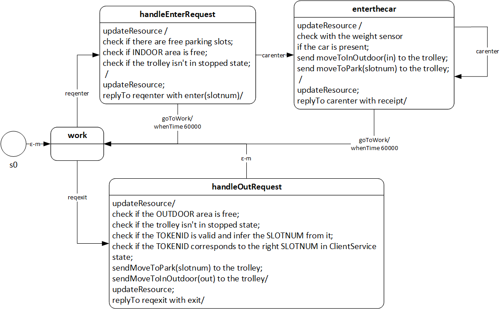
|
Deployment
To end this sprint we thought to deploy what has been completed, as all the client buisness logic has been developed. We decided to divide our system in 5 nodes:
- The indoorarea node: holds the WeightSensorMock and Interface and its configuration files
- The outdoorarea node: holds the SonarMock and Interface and its configuration files
- The parkmanagerservice node: holds two artifacts:
- parkmanagerservice-1.0.tar: contains the ClientService, Trolley, WeightSensor/Sonar Interface and SonarController and its configuration files. Also contains the prolog knowledge base for the qak infrastructure
- parkmanagerservice-boot-1.0.tar: contains the SpringBoot components: BaseController, SpringController and the SpringModel (e.g. ParkingSlot.kt, ApiError.kt, etc...)
Depends on the indoorarea, outdoorarea and basicrobot.
- The basicrobot node: holds the BasicRobot; depends on wenv
- The wenv node: holds the WEnv and the virtual robot
See the image below for a deployment diagram:
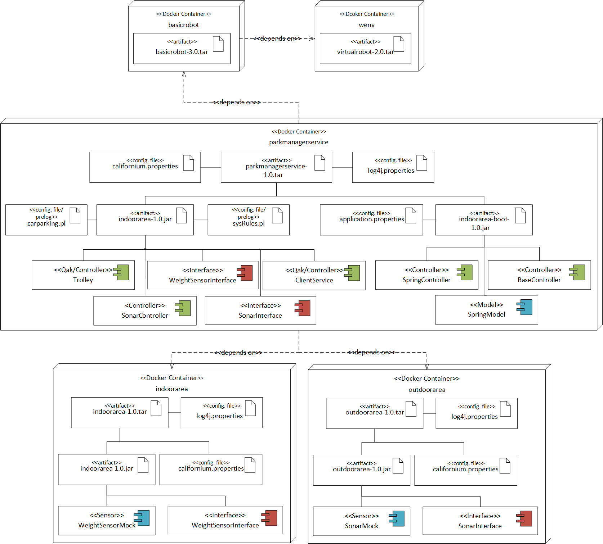
We also decided to proceed with the deployment using the Docker container technology.
indoorarea Dockerfile
We provide a
Dockerfile to build and run a Docker image for the indoor area.
# To build (in the indoorarea/ folder):
docker build --rm -t indoorarea .
# To run:
docker run -rm -i -p8025:8025 indoorarea
outdoorarea docker image creation
We provide a
Dockerfile to build and run a Docker image for the outdoor area.
# To build (in the outdoorarea/ folder):
docker build --rm -t outdoorarea .
# To run:
docker run -rm -i -p8026:8026 outdoorarea
parkmanagerservice image creation
We provide a
Dockerfile to build and run a Docker image for the parkmanagerservice.
# To build (in the parkmanagerservice/ folder):
docker build --rm -t parkmanagerservice .
# To run:
docker run -rm -i -p8080:8080 parkmanagerservice
Deployment using Docker
We also provide a
script to automatically deploy the system using one container per node, as described above.
Use it invoking
docker-compose -f automatedcarparking.yaml
Sprint Summary
The coming figure represents the final outline resulting from the Sprint3. The dashed lines that group components together gives a glance of the physical deployment organization
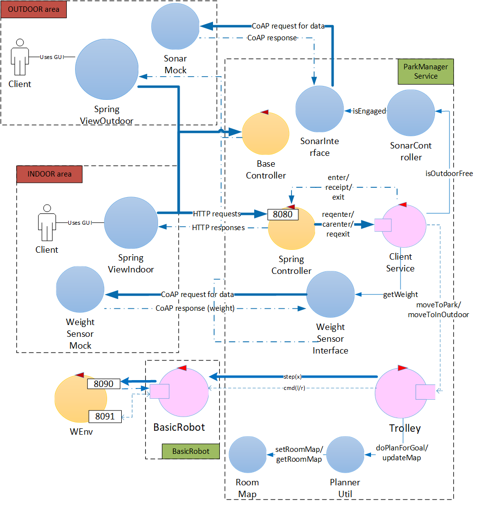
|
Summary table
{kind=link}
{kind=link}